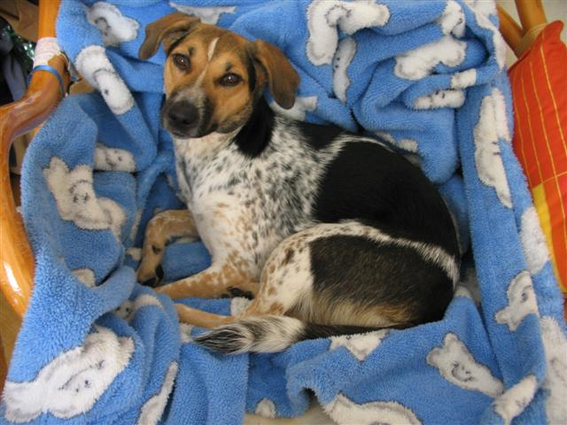
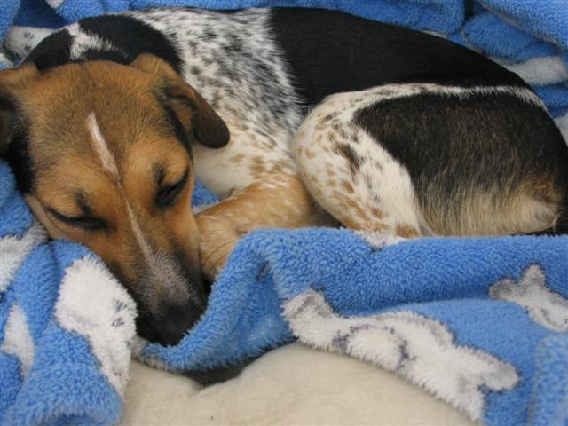
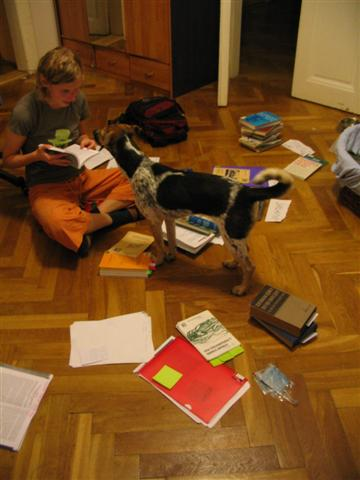
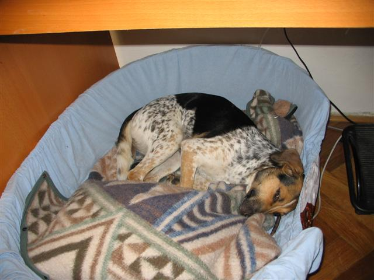
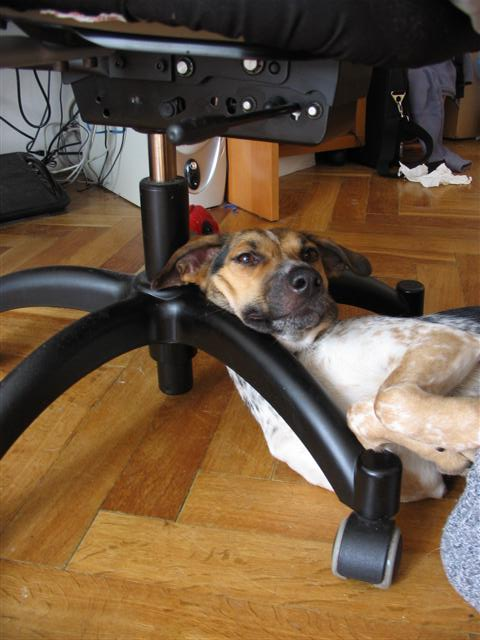
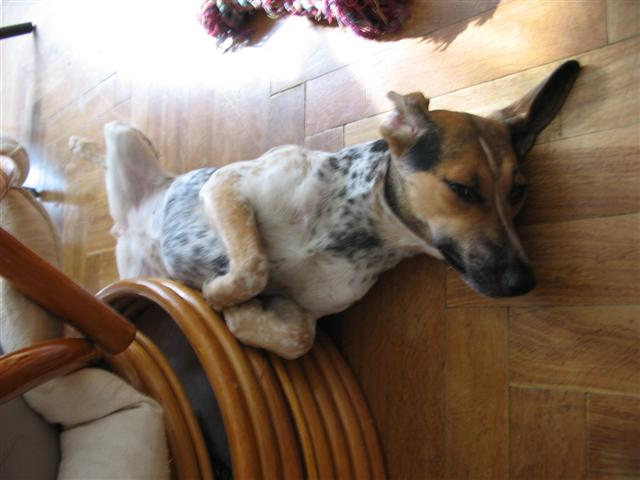
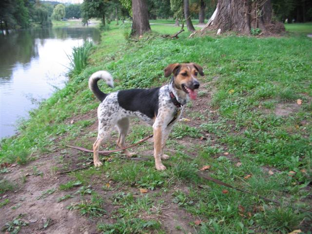
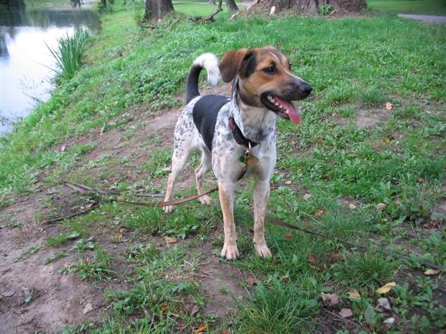

Navigace |
Hárání pokračuje, napětí stoupá
 Terapeutka léčby neklidem (klid si nechává pro sebe, když si od nás chce odpočinout). Zdroje napětí jsou v současnosti v naší domácnosti dva:
 Nela na obláčku.
 Takhle mi pomáhala se seminárkou o Benešově proslovu.
 Kuk.
 Kancelářské harakiri.
 To jejich čtení mě unavuje:-) Výsledkem vzájemného působení těchto dvou faktorů je, že jsme museli poněkud zkrátit procházky s Nelou - časově i prostorově. Stále je na stopovačce, kterou navíc občas třímáme v ruce a taky jsme zmenšili náš okruh Stromovkou, abychom k sobě nenalákali víc psů, než je nezbytně nutné. I tak však jich potkáváme víc než dost a Nela se nyní evidentně libí i malým čivavákům, jež by se jí za normálních okolností raději vyhnuli z obav, že je zašlápne či upackuje.
 Zátiší u slepého ramene Vltavy. 
|